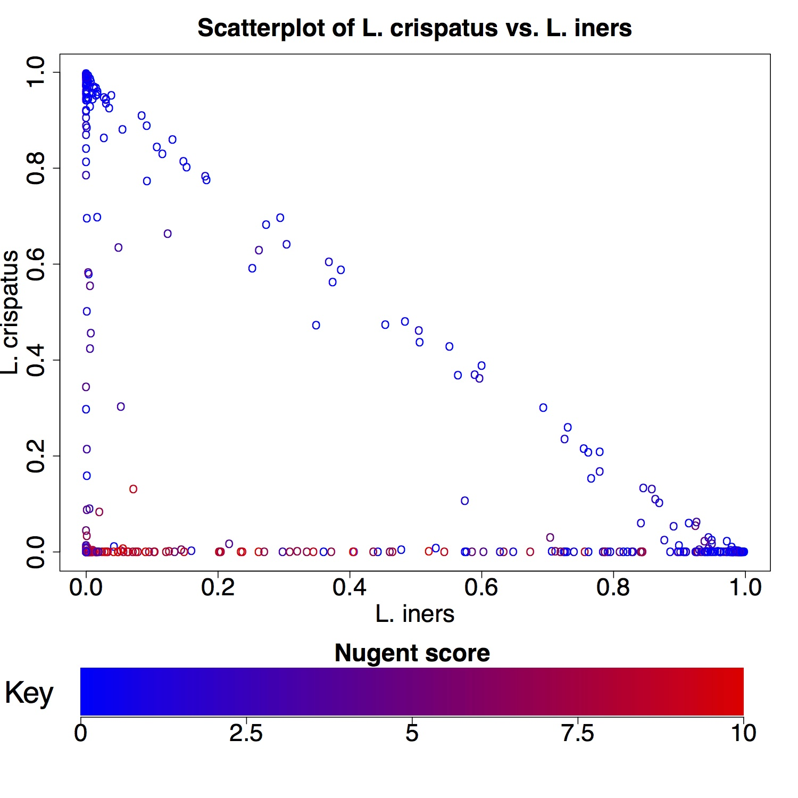

The scatter panel displays a scatter plot of two selected variables. The X variable is displayed on the X axis and the Y variable on the Y axis.
The "color variable" makes it possible to view the distribution of the selected variable across the samples, effectively adding another dimension to the plot. There are three main options, each of which may be appropriate in different situations. The 'Unique' option generates a different color for each different value of the variable. This option works well up to about ten values. When there are many more values the selected colors are still unique, however, they become difficult to tell apart. The 'Gradient' option may be used when the color variable is continuous. This option selects colors from a gradient. This makes it easy to distinguish between low and high valued colors. The third option is to use color 'Categories'. This option breaks the color variable up into a user selected number of groups. These groups are then given unique colors.
Seed allows users to generate scatter plots using any two features present in the dataset. Plotting the abundance of two different taxa may help visualize whether taxa are more often found together in samples or whether they are generally found in different samples. For example, in the Ravel et al. dataset we can plot L. crispatus vs. L. iners. This plot seems to indicate that most samples have either L. iners or L. crispatus, with only a few samples including both taxa. Similarly, coloring the points by Nugent score shows that high Nugent score samples tend to have neither L. crispatus or L. iners.
graphics::plot - generate scatter plot
graphics::legend - add legend to plot
grDevices::colorRampPalette - interpolate colors
grDevices::rainbow - create a vector of n contiguous colors